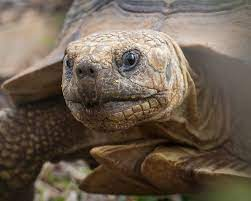
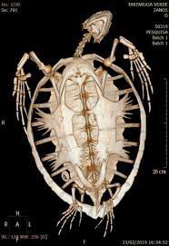
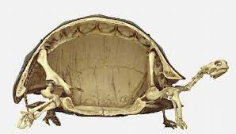

Do que é feito o casco da Tartaruga
As tartarugas possuem essa estrutura mais dura, com três camadas. A primeira é a externa, feita com queratina. Essa substância é muito utilizada para dar maior resistência aos cabelos e unhas dos humanos. Sua função não é diferente no corpo desses animais. A segunda parte do casco é a estrutura óssea. É essa camada que dá o formato e a resistência que ajuda a proteger o resto do corpo desse animalzinho. São mais de 50 ossos que formam espinha dorsal e caixa torácica, por exemplo. Por fim, o casco possui uma membrana na sua parte interna. Essa parte é a que ajuda a revestir os órgãos e músculos do bichinho, dando uma proteção auxiliar a das outras camadas.
Qual a função do casco da tartaruga?
Essa parte do corpo do animalzinho é como um escudo protetor, que impede danos aos órgãos internos em caso de ataque dos predadores. No entanto, existem cientistas que se perguntam o porquê de outras espécies vulneráveis não possuírem essa proteção. Alguns pesquisadores, como os paleontólogos do Museum of Nature and Science, de Denver, acreditam que o casco de tartaruga é uma adaptação para escavação subterrânea. A partir do estudo dos fósseis das espécies primitivas, Tyler Lyson, um dos cientistas dessa pesquisa, concluiu que o casco se tornou uma proteção durante o processo evolutivo natural. É o caso, por exemplo, das penas das aves. Elas não eram originalmente feitas para ajudar no voo, mas hoje são essenciais para isso.
